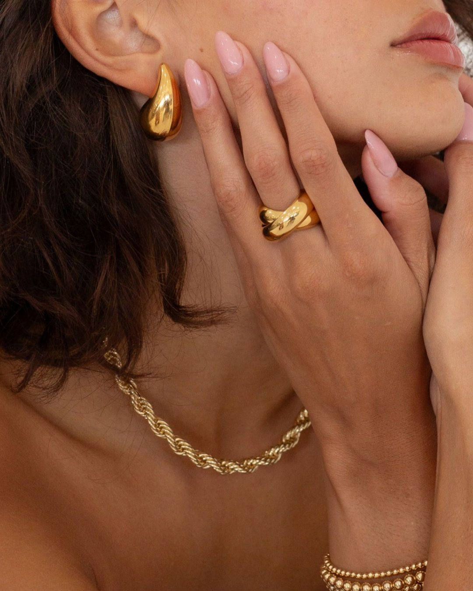
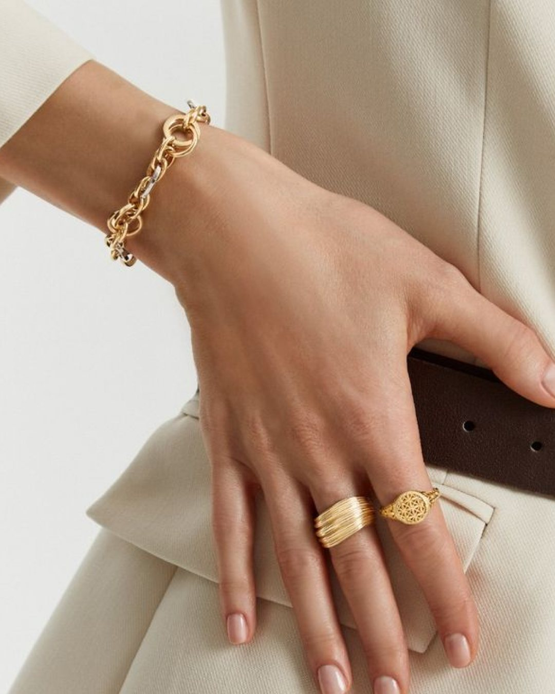
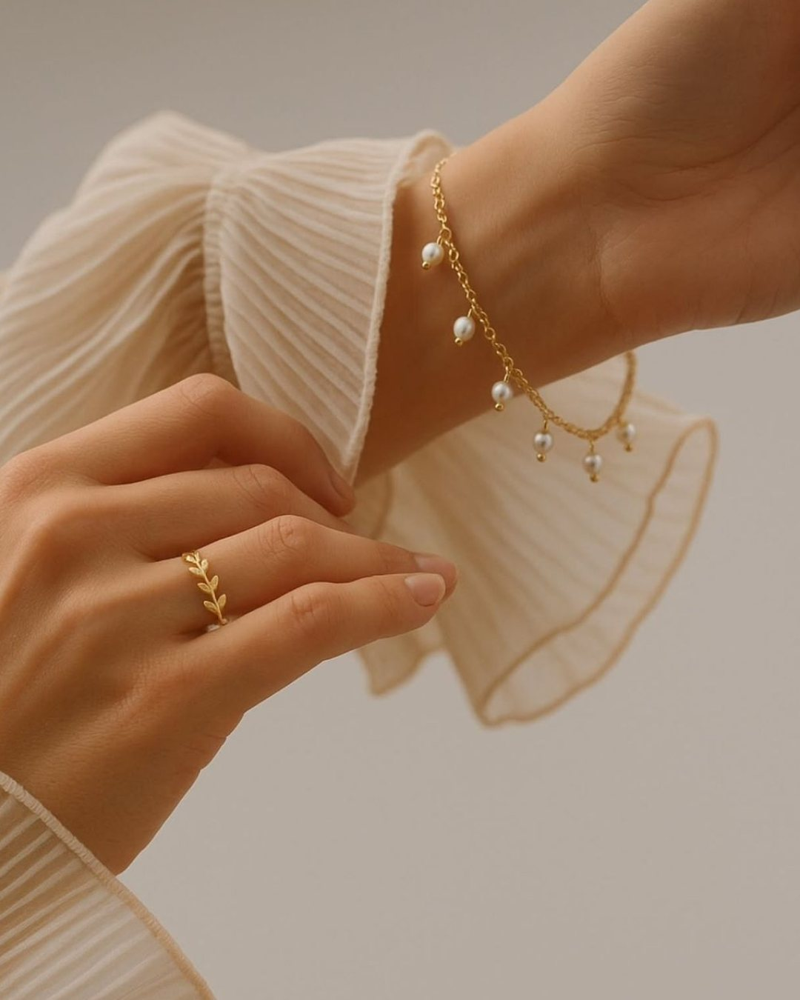

Juazeiro do Norte · Ceará · Mais de 15 anos
Banho de joias no atacado. Folheamos anéis, pulseiras e brincos para quem revende, com a espessura de camada que você pedir e o mesmo acabamento em todo o lote.


O ofício
Duas peças podem sair igualmente brilhantes da cuba e durar tempos muito diferentes na mão da cliente. O que separa uma da outra é a espessura da camada e o preparo que veio antes dela.
Trabalhamos com a camada declarada, medida em milésimos, e com o mesmo procedimento de limpeza e conferência em cada lote. Você sabe o que está comprando, e a peça chega na vitrine do jeito que foi vendida.
Linha Gold & Silver

A camada
A camada é dita em milésimos de ouro depositados por grama de peça. Quanto maior o número, mais ouro fica na joia e mais ela resiste ao atrito do uso.
Não existe espessura certa para tudo: existe a certa para o preço e o giro da sua peça. A gente ajuda a escolher, e o orçamento fecha na cotação do ouro do dia.
Simule o seu banho
Informe o peso do lote e a espessura desejada. O cálculo usa a cotação do ouro que atualizamos aqui, e serve de estimativa para você se planejar.
1000 g equivalem a 1 kg de mercadoria.
De 2 a 20, conforme a tabela acima.
Como trabalhamos
Combinamos peso, categoria e a camada desejada. O orçamento fecha na cotação do ouro daquele dia, sem taxa por fora.
Antes do banho vem a limpeza e o tratamento da superfície. É essa etapa que faz o ouro aderir por igual, e é onde a maioria dos defeitos nasce.
A peça recebe a camada que você pediu, com o mesmo controle aplicado a todo o lote, não só às primeiras peças.
Cada lote é conferido peça a peça antes de voltar para você, pronto para ir direto à vitrine.
Contato
Atendemos lojistas e revendedores. O orçamento volta no mesmo dia.
Falar no WhatsApp